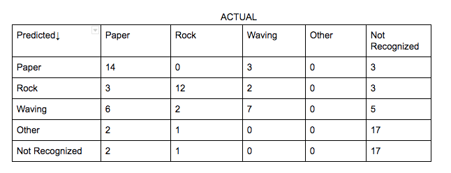
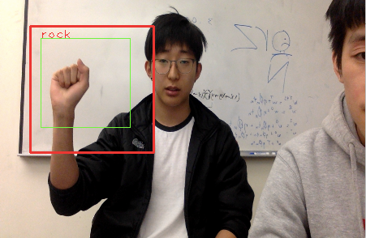
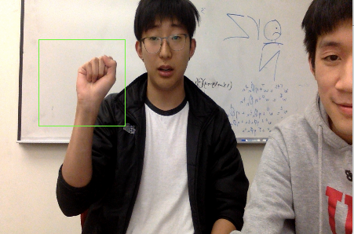
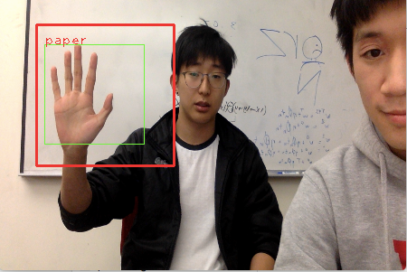
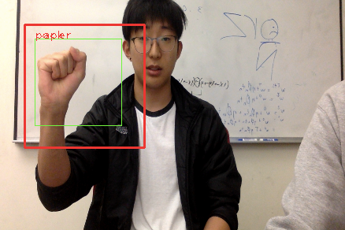
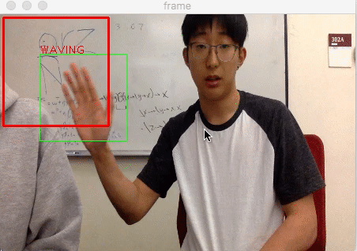
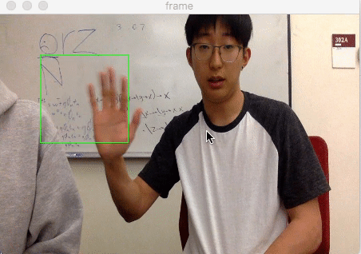

Problem Definition
We are tasked on designing and implementing algorithms to recognize at least three hand shapes and movements. And then to graphically represent our results in the form of a confusion matrix. This is useful so we can observe just how accurate our camera is at detecting and stating what these different shapes and gestures our hands make. We assume that we have the tools necessairy to complete this task, and that our webcam will be able to work well with our code. Some difficulties we anticipate is coding it so that our camera can detect the difference between a skin colored background and our actual skin.
Method and Implementation
The techniques, we are using frame differencing, template matching, skin color detection, and motion energy. We decided on these techniques as by using template matching we have a better way of identifying our hand in the shape of a fist or an open hand for rock, paper, and waving. Skin color detection is used to rightfully identify a person's hand based on skin color. Frame differencing will help us detect the different frames in a motion. And lasty motion energy uses those different frames to identify our dynamic waving motion of the hand.
Template matching- We used a black and white photo of our hand and compared our hand to the the template and we would print something if it matches or not.
Skin color detection- We utilized the code we used in lab 7.
Frame differencing- We ustilized the code we used in lab 7.
Motion energy- We utilized the code we used in lab 7.
Experiments
Our experiments consisted of us recording us doing our hand gestures and showcasing our different techniques working. We then tested each one 20 times including other and not recognizable to make a confusion matrix for paper, rock, and waving.
We then manually made a confusion matrix of our positives, false positives, and etc. within 100 total trials to show the accuracy of our system.
Results
List your experimental results. Provide examples of input images and output images. If relevant, you may provide images showing any intermediate steps. If your work involves videos, do not submit the videos but only links to them.
Results | |||
| Complete Matrix |  | ||
| Trial | Positive | Negative(s) | Confusion Matrix |
| Rock |  |  |  |
| Paper |  |  |  |
| Waving |  |  |  |
Discussion
Discuss your method and results:
- Strengths of our method is that we are able to utilize background differencing, skin color detection, and motion energy. A major weakness we found with our template is that we would need to be in the near exact orientation of the template for it to be recognized more accurately, however it still is able to recognize most of it.
- Our results show that our method is generally successful, but there are some limitations as paper tends to be wrongly stated more than rock does which could be due to the fact that our code recognizes that some fingers up is an open hand and is paper, or that rock is a hand and is paper at times. And sometimes our camera has a hard time registering the difference between a waving motion and just a paper being shown. Another major limitation we noticed is that on a different higher quality webcam our code gets a little finiky as the camera is able to detect more than we were working with so there are more errors than on our working machine. This changed what we expected to find on other machines, but on ours we got the results we expected besides the few negatives we got. And another limitation is that if you wave too fast it is hard to identify that a hand is waving. Lastly, we only used one image as a template for each gesture which could have impacted our accuricies.
- For future work we could implement scissors as well to make a full rock paper scissors game. We could also try to make it more accurate and work better with any webcams regardless of their different qualities and lighting angles/backgrounds. And lastly, we could try to get our motion gesture to more accurately be detected.
Conclusions
Our method is able to identify 1. An open hand (paper), 2. A fist (rock), 3. A waving hand. Rock precision: 14/27, recall: 14/20 , and F-1 scores: .644 ; Paper precision: 12/16, recall:12/20 , and F-1 score:.66 ; and Waving precision: 7/12, recall: 7/20 , and F-1 score: .4375.
Pre-Processing
Recognition
Post-Processing
Credits and Bibliography
Credit any joint work or discussions with your classmates. Worked with: Eric Chang